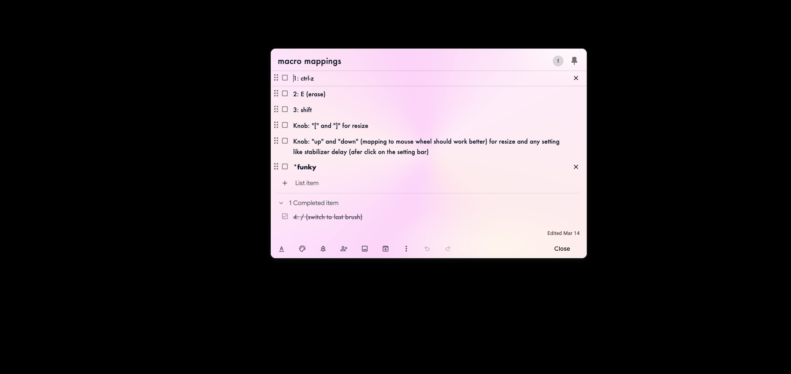

Stable
Each note keeps its own color identity instead of reshuffling every refresh.

Keep It Colorful
Chrome extension for Google Keep
Google Keep, but easier on the eyes
Keep It Colorful turns Google Keep into a bright, organized workspace with stable note colors, polished themes, expressive typography, and premium touches that make important ideas impossible to miss.
Stable
Each note keeps its own color identity instead of reshuffling every refresh.
Fast
Auto-colors new notes instantly so your workspace stays readable by default.
Flexible
Themes, fonts, layouts, glow effects, and premium styling when you want more control.
See it in action
Watch the extension change a real Keep board so the value is obvious before anyone reads the feature list.
Search Intent
Give every Google Keep note a stable color identity so your board is easier to scan at a glance.
The problem
If you want Google Keep to feel more beautiful, coloring notes one by one gets tedious fast. Most boards end up stuck between plain white notes and manual cleanup you do not want to keep doing.
The solution
It gives notes beautiful random colors automatically, lets you switch palettes, and turns a boring board into something lively without forcing you to color every note by hand.
How it works
Install the extension.
Open Google Keep.
Let notes receive stable colors automatically.
Adjust palette and layout if you want more control.
Why it helps
Make Google Keep feel more beautiful the moment you open it.
Avoid the chore of manually coloring notes one by one.
Use glow, important tags, and alert tags when some notes should stand out more.
Use global focus mode when you want to isolate the open note and remove the rest of the board.
See it
The core promise is simple: less white-box boredom, less manual coloring, and a Google Keep board that feels more expressive the moment the extension is on.

Why it clicks
Color is not decoration here. It becomes structure. Notes feel grouped, priorities jump out, and the entire board becomes easier to read in seconds.
Automatic coloring
Turn on auto-coloring and your Keep board stops looking unfinished the moment you create something new.
Stable mapping
Stable per-note color mapping helps you remember where things are without relying on titles alone.
Keyword effects
Use keywords for bold styles, gradients, specialty fonts, or stronger visual emphasis where it matters.
Layout and focus
Switch between compact or list layouts, focus mode, and typography options that feel less default and more yours.
Different grids including simple lists
Keep It Colorful does not lock you into one rigid board. Use denser grids when you are scanning a lot, then move into simple list mode when you want less noise and clearer reading flow.
Compact grids help you compare more notes at once without giving up color cues.
List and simple list modes stretch notes into calmer rows that are easier to review line by line.
Layout becomes another filter. The same notes can feel fast, focused, or spacious depending on the task.


Global focus mode
When you open a note, focus mode pushes the background fully black so the content gets your full attention. It is built for writing, editing, and reviewing when the rest of the board starts pulling on your eyes.
The open note becomes the only thing that matters instead of competing with the whole board.
Use *important, *alert, and glow effects when a note should still stand out before you open it.
Switch between expressive colorful browsing and a cleaner single-note editing state without changing tools.


Different themes
Some days call for bright Google Keep energy. Others need terminal edge, black-and-white restraint, or a softer gradient wash. Themes change the emotional tone of the board without changing your workflow.
Theme packs let color, contrast, and note treatment move together as one cohesive system.
Gradient, terminal, minimal, and Keep-inspired looks make the extension feel more personal.
You can keep the playful palette or dial things down when the board needs more discipline.
Per-note alerts and emphasis
Not every note should look the same. For urgent tasks, active work, or ideas you do not want to lose, you can push a single note forward with stronger visual treatment instead of repainting the whole board.
Use alert borders and glow states to make a note feel live, urgent, or recently touched.
Switch fonts or font styles per note so reminders, creative drafts, and references each read differently.
Keyword-driven styling gives you emphasis on demand without manual visual cleanup every time.

Use a blinking edge when a note should pull your attention immediately.
Combine glow, weight, or font styling so one note feels different on purpose.
From plain to vivid
If your notes hold ideas, drafts, reminders, research, shopping lists, or project fragments, visual contrast is not a luxury. It is how you keep momentum.
Curated palettes including a Google Keep-inspired option instead of random harsh colors.
Typography and highlight options for notes that need more personality or urgency.
Premium tools for deeper customization without forcing complexity into the default experience.
Before
Everything blends together. Important notes need extra effort to find.
After
Priority, category, and mood show up at a glance without changing how Keep works.
Ready to brighten the board?